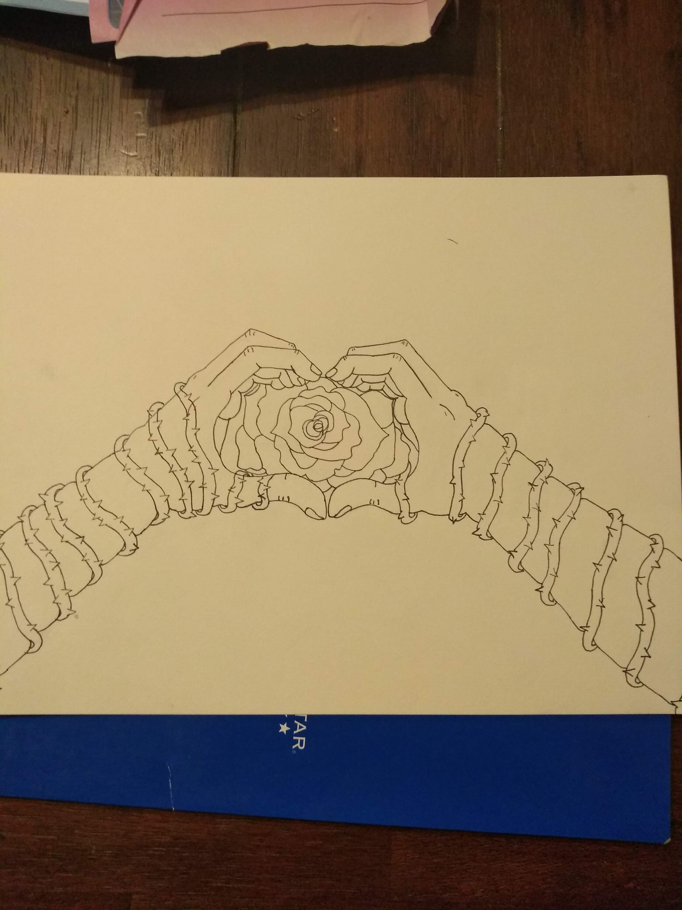

Since I was young I have always loved playing videogames and continue to play them unitl this day.
Since that is my favorite hobby, I have decided to figure out how they were made, which led me coding and computer science.
I plan to obtain the knowledge to develop and create new types of games for people to enjoy.

I have exactly no skill or experience in this field yet,
that is why I am taking computer science this year and hoping to take computer principals next year
for more experience. Even though I am inexperienced, I am very adaptable so I should be able
to learn relatively easy. But I am also pretty lazy so I have not done any school actiivities or sports yet.
What I learned about myself from my experiences is that I am really good with my hands, that being either
drawing, playing basketball, or even building items.

I believe that through my experiences, those old and new, I will achieve my goal of becoming what I want in the future. Thank you for taking your time to read about me.
Please go ahead and check out the rest of my site.